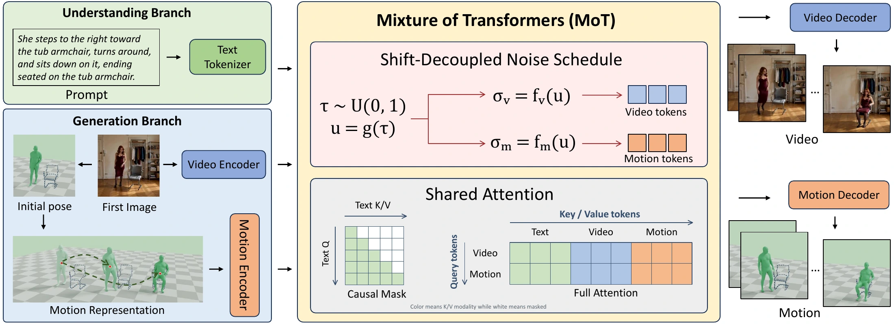

Joint video and
3D motion generation
We adapt Cosmos 3 to generate scene-aware 3D human motion and corresponding video in a single stage, conditioned on one image and a text prompt.
World2Motion turns the visual knowledge of a video world model into scene-aware 3D human motion. Given a single image and a text prompt, it generates the video and the corresponding motion together.

We adapt Cosmos 3 to generate scene-aware 3D human motion and corresponding video in a single stage, conditioned on one image and a text prompt.
We combine synthetic video–motion pairs with real videos paired with estimated 3D motion, bringing interaction supervision and diverse human movements into one dataset.
Video and motion use different noise shifts with shared denoising progress. The same noise relationship is maintained during training and inference to improve temporal stability.
| Method | FID ↓ | R@1 ↑ | MM-Dist ↓ | Contact-F1 ↑ | ISR ↑ | Jerk ↓(10 m/s³) | FSR ↓(%) | PoseError ↓(mm) | Time ↓(s) |
|---|---|---|---|---|---|---|---|---|---|
| Text-to-motion | |||||||||
| HY-Motion | 0.46 | 0.10 | 1.21 | 0.09 | 0.51 | 3.43 | 1.25 | — | 2.83 |
| Kimodo | 0.66 | 0.05 | 1.30 | 0.03 | 0.23 | 35.14 | 6.07 | — | 1.93 |
| Go-to-Zero | 0.51 | 0.04 | 1.35 | 0.07 | 0.36 | 17.50 | 3.42 | — | 2.57 |
| Human–object interaction | |||||||||
| HOIFHLI | 0.82 | 0.02 | 1.37 | 0.09 | 0.12 | 10.62 | 6.28 | — | 13.94 |
| LIGHT | 0.62 | 0.03 | 1.35 | 0.17 | 0.46 | 1.37 | 11.60 | — | 25.88 |
| Two-stage video generation and motion recovery | |||||||||
| MiniMax-H3 + CameraHMR | 0.69 | 0.10 | 1.32 | 0.24 | 0.91 | 37.22 | 6.41 | — | 523.67 |
| Joint video–motion generation | |||||||||
| CoMoVi | 0.71 | 0.12 | 1.25 | 0.09 | 0.69 | 16.10 | 24.45 | 81.28 | 270.45 |
| World2Motion | 0.27 | 0.24 | 1.13 | 0.22 | 0.91 | 8.35 | 2.80 | 67.50 | 156.59 |
Best values are bold. PoseError measures pelvis-relative agreement with CameraHMR estimates from generated video. ISR measures interaction completion; it does not measure exact physical contact.
vs. MiniMax-H3 + CameraHMR
156.59 s vs. 523.67 s
Matches the two-stage baseline
on the evaluated benchmark
17.0% lower than CoMoVi
under the same evaluation
HOIFHLI and LIGHT include their predicted object motion. In the other motion renderings, dashed objects show fixed scene context. Video-generating methods include the corresponding RGB output.